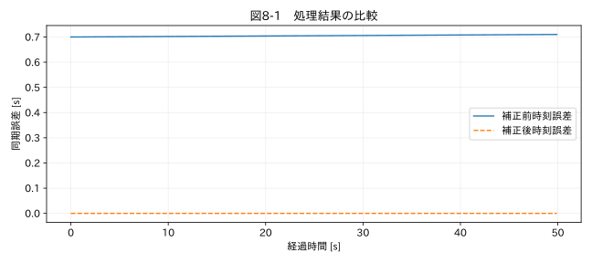

第II部 時間軸を修復する / 第08章
複数計測器の時刻同期
学習目標
時刻オフセットと時計ドリフトを区別し、共通トリガーから補正量を求める。相互相関のラグの符号を確認し、物理的な応答遅れを時計ずれとして消さない。
8.1 二つの山がずれている
電流と温度の波形の山がずれていても、それは時計ずれとは限らない。電流が増えてから温度が上がるまでには熱容量による遅れがある。温度のピークを電流のピークへ移動すると、物理的な応答時間を消してしまう。同期のためには、同一のイベントを両機器が観測している必要がある。
本章の教材は、二台に同じトリガーパルスを入れた設定である。基準時刻10秒と30秒にパルスがあり、Bの時計は t_B = 1.0002 t_A + 0.7 とずれる。0.7秒の固定ずれに加え、200 ppmの進みがある。これは模擬設定であり、実機の代表値ではない。
8.2 オフセットとドリフトの補正
一つの共通トリガーだけでは、その時点のずれしか分からない。二つ以上の離れたトリガーがあれば、t_B = a t_A + b という直線モデルを当てはめられる。aは時計の速さの比、bは時刻の原点差である。BからAへ戻すには t_A = (t_B−b)/a とする。
例えばAの10秒、30秒に対応するBの記録が10.702秒、30.706秒なら、a=(30.706−10.702)/(30−10)=1.0002、b=0.7となる。複数トリガーを使えば残差を求められ、直線モデルで足りるかを検討できる。時計の補正イベントが途中にあれば、区間別モデルが必要になる。
8.3 相互相関による推定
相互相関は、一方の波形をずらしながら、もう一方と形がどの程度重なるかを調べる。平均を引いておけば、共通の直流成分の影響を減らせる。ただし長いトレンドや周期性が強いと、誤ったラグが大きな相関を持つ。物理的にあり得る探索範囲に制限し、複数の窓で安定性を確認する。
本章のコードは correlate(b, a) を使い、Bを7点遅らせた既知の信号で符号を確認する。正の7が出れば、この呼び出し順ではBがAより遅い。関数や引数を入れ替えたら符号も変わるため、記憶に頼らず既知ラグのテストを置く。
相関のピーク位置は標本間隔の整数倍に量子化される。ピーク周辺の補間によるサブサンプル推定は可能だが、情報が増えたわけではない。ノイズ、波形の非対称性、信号帯域、センサー応答、時計のドリフトから推定誤差が生じる。
関連する詳細実験は実践補講に掲載。入力形式・同期・補間・校正・多変量・チャンク境界を扱う。
実行するコードと結果
run.py · 共通処理の全ソース
教材フォルダで python examples/chapter08/run.py を実行。以下は省略のないスクリプト。共通モジュールは教材一式に含む。
from pathlib import Path
import sys
ROOT=Path(__file__).resolve().parents[2]
sys.path.insert(0,str(ROOT))
sys.path.insert(0,str(ROOT/'examples'))
import numpy as np
import pandas as pd
from common import load,truth,seconds,plot
from tsclean.core import numeric,timestamps,time_flags,hampel,freeze_candidates,interpolate_short,compare
from scipy.signal import correlate,correlation_lags
df=load('05_sync');a=df.reference_trigger.to_numpy();b=np.r_[np.zeros(7),a[:-7]]
c=correlate(b-b.mean(),a-a.mean(),mode='full');lags=correlation_lags(len(b),len(a))
lag=int(lags[np.argmax(c)]);print('Bの遅れ [sample]:',lag,'遅れ [s]:',lag*.1)
recorded=seconds(df)+.7;corrected=(recorded-.7)/1.0002
print('トリガー校正式の最大残差 [s]:',np.max(np.abs(corrected-df.reference_time_s)))
plot(8,df.reference_time_s,{'補正前時刻誤差':recorded-df.reference_time_s,'補正後時刻誤差':corrected-df.reference_time_s},'同期誤差 [s]')
検証環境での実行結果を開く
Bの遅れ [sample]: 7 遅れ [s]: 0.7000000000000001
トリガー校正式の最大残差 [s]: 9.998011307743582e-10

8.4 同期誤差を評価する
図8-1では補正前の誤差が時間とともに増え、アフィン補正後はほぼゼロになる。今回は正解の時計モデルが既知なので、これは実装検証である。実際の試験で残差がゼロになるとは限らない。校正に使わなかったトリガーで残差を評価し、最大絶対誤差、標準偏差、時刻依存性を報告する。
時刻誤差δtが値の比較へ与える影響は、局所的には δx ≈ (dx/dt) δt と見積もれる。急激な圧力上昇では、小さい同期誤差でも大きな差になる。例えば傾き2 MPa/sの区間で20 msずれれば、約0.04 MPaの見かけの差が生じる。
8.5 同期してはいけない場合
異なる位置の温度、流体の輸送遅れを伴う圧力、制御入力と製品応答などは、時刻が合っていても波形が遅れる。相関最大化で時間を動かすことは、時計校正ではなくモデルの当てはめになる。実施するなら「応答遅れ推定」として別の結果にする。
長い欠損を補間してから相関を取ると、同じ補間形状が相関を作ることもある。共通の観測区間、同じ帯域、同じイベントを選び、補間比率を確認する。相関係数が高いだけで因果関係を結論しない。
演習
基礎演習
7点遅れの例を実行し、相関ラグと秒単位の遅れを求める。
応用演習
200 ppmの時計差が1時間後に生むずれを求める。開始時だけ同期した場合を考える。
実務演習
温度センサー二つの応答が3秒ずれている。片方は太い保護管に入っている。時刻補正をする前に、どの実験を行うか。
演習解答・解説を表示する
基礎：ラグ7、周期0.1秒なのでBは0.7秒遅れる。Bの値のインデックスを移すのか、時刻列を補正するのかも明示する。
応用：3600×200×10⁻⁶=0.72秒。開始時のオフセットだけを補正しても、終了時にはずれが残る。
実務：共通の電気トリガーで時計ずれを独立に確認する。センサーを同じ媒体のステップ変化にさらし、保護管による時定数の差を調べる。物理応答の遅れを時計補正で消さない。
章末まとめ
同期は、同じ現象を同じ時刻で比較できるようにする工程である。時計の誤差と対象の応答遅れを分け、補正量と残差を記録する。